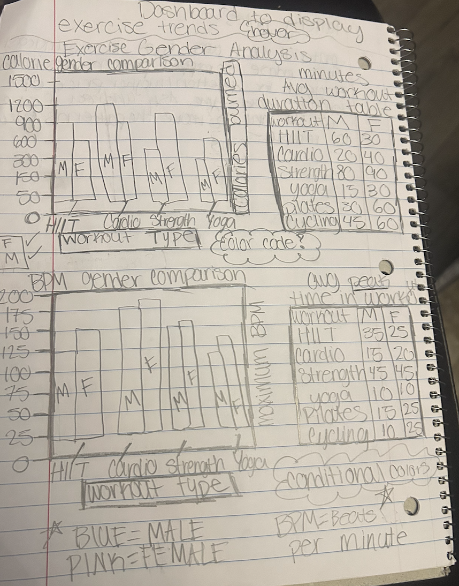
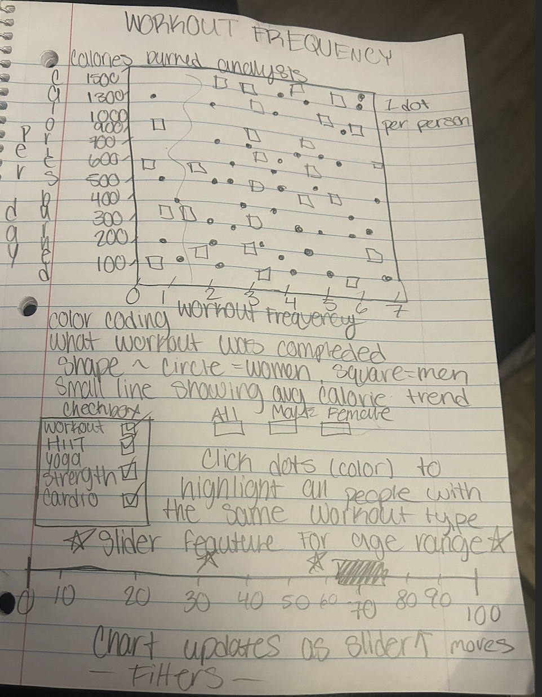
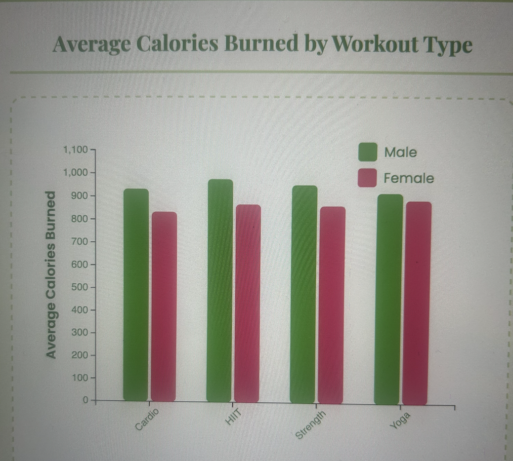
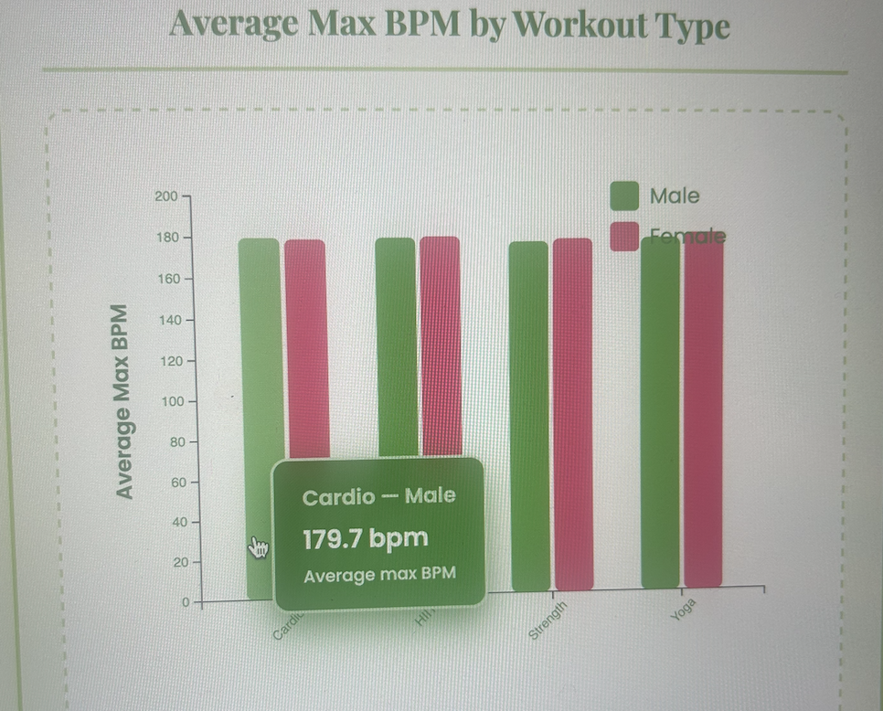
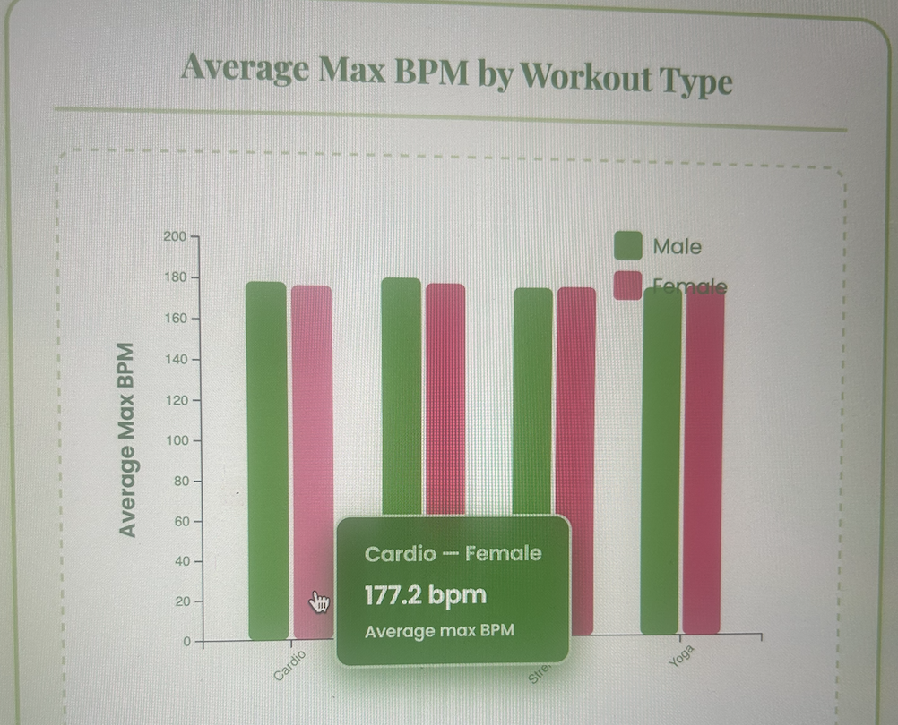

Gym Exercise Trends — Documentation
Project overview
This interactive dashboard explores workout patterns — average calories burned and average maximum BPM — broken down by workout type and gender.
It is implemented with D3 v7 and HTML/CSS/JS. The visualization and the documentation are hosted publicly (see deployment section).
Dataset
The visualization reads data/gym_members_exercise_tracking.csv. Expected columns:
- Workout_Type (e.g., HIIT, Cardio, Strength, Yoga)
- Gender (Male, Female)
- Calories_Burned (numeric)
- Max_BPM (numeric)
- Age (optional, numeric)
Please include the CSV file in /data (relative to index.html) so GitHub Pages can serve it.
Design process
- Reviewed Kaggle datasets and became interested in gym datasets: How do workout intensity and calorie burn differ by gender and workout type?
- Sketch interface: two side-by-side bar charts, filters (workout subset, gender, age range), and a detailed table for precise numbers.
- Implement incremental prototypes: load CSV → compute group aggregates → render basic bars → add transitions → add filters → polish styles and tooltip.
Below are some of the sketches for this visualization:


Rationale for major design choices
- Bar charts grouped by workout: grouped bars (male/female) make gender comparisons by workout easy.
- Two charts (calories & bpm): these are distinct measures (energy expenditure vs. heart rate), so separate charts avoid confusion.
- Filters: checkboxes for workout types (multi-select), radio for gender (all/male/female), and age sliders to narrow the sample.
- Color + legend: color + text legend (not color-only) to support accessibility.
Interactions & usage
- Use the workout checkboxes to include/exclude workout types.
- Use Gender radio to focus on Male, Female or All.
- Use the Age sliders to limit to an age range (works only if Age column exists in CSV).
- Hover bars to see precise values (tooltip); the detailed table updates with the selected filters.
If the page fails to load data, open DevTools → Console to inspect errors. Testing has been completed on Chrome, Firefox, Google, and Microsoft Edge.
Findings / Demonstration screenshots
With no filters included, we can immediately see that men always burn more calories than women in all workouts.

In this second demonstration, I filtered the graphs to age range of 20-30 and 40-50 to measure difference in beats per minute. The conclusion was the older age range has higher bpms, and they tend to prefer HIIT workouts.


Demo Video
Deployment & repository
I publish the visualization with GitHub Pages. The visualization is the root index.html, and the documentation is documentation.html.
Published URL for Github: https://github.com/MyouiMinaa/Visualization-FP-Gym-Analysis /
Open visualization (index.html)
Open documentation
Troubleshooting
- CSV 404: ensure
/data/gym_members_exercise_tracking.csv exists in the repo and was committed.
- CORS: GitHub Pages serves static files with correct headers; if hosting elsewhere, ensure CORS is allowed.
- Chart crashes: check the console for bad numbers or column name typos.
Credits
Built with D3.js v7. Dataset source :https://www.kaggle.com/datasets/valakhorasani/gym-members-exercise-dataset?resource=download